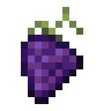

Umożliwia odbieranie codziennych nagród związanych z wydarzeniem, jeśli owe ma powiązany ze sobą kalendarz. Nagroda na dany dzień może być tylko odebrana tego dnia. Jeśli użytkownik odbierze wystarczająco wiele nagród z danego kalendarza otrzyma specjalną nagrodę.
Wyświetla obecny licznik globalny wraz z postępem graczy. Jest tam wbudowany ranking pięciu osób, które najbardziej przyczyniły się do zwiększania licznika. Obecnie nie można zdobyć żadnych nagród, ani nie są one wyświetlane.
Wyświetla obecne i nadchodzące wydarzenia. Komenda dawniej znana jako /event. Jej nazwa została zmieniona z powodu dodania innych komend związanych z systemem wydarzeń.
Dodano Nadmorską Wioskę
20% Nic
30% event (Nic)
10% 1 Piach 1-2 XP
10% 1 Pszenica 1-2 XP
10% 1 Kamień 1-2 XP
15% Monety
5% Stara Chata
Struktury
Stara Chata
Poziom Zagrożenia: 4
Wrogowie:
- Wodny Slime
Zwykła Skrzynia:
- Marchew 1-3
- Zwykła Skrzynia 1
- Nasiona Pszenicy 1
Skarb:
- Monety 50-150
- Chleb 1
- Kryształ 0-1
Zamek z Piasku
Poziom Zagrożenia: 5
Wrogowie:
- Ametystowy Skorpion
Zwykła Skrzynia:
- Piach 3-7
- Token Morex 5-10
- Nasiona Pszenicy 0-1
Skarb:
- Token Morex 50-150
- Nasiona Winogron 0-1
Nowy handlarz: Taressa
Można zakupić 5 razy.
Nie posiada własnego dialogu.
| Cena | Przedmiot |
| 5000 Token Morex | 1 Birthday Spellbook |
| 5000 Token Morex | 1 Wielki Urodzinowy Miecz |
| 15 Zielona Esencja | 10 Token Morex |
| 15 Niebieska Esencja | 10 Token Morex |
| 10 Różowa Esencja | 25 Token Morex |
| 5 Złota Esencja | 50 Token Morex |
"Esencja pochodząca z Wodnego Slime'a. Jej właściwości są generalnie identyczne do właściwości Niebieskiej Esencji, ale zawiera ona dużo więcej energii."
Kupno: ❌
Sprzedaż: ❌
Rzadkość: 🟡 Legendarny
Wymienialny: ❌
"Roślina, którą normalnie można znaleźć w wodzie. Ludzie z krajów wyspiarskich lubią smażyć i podawać ją jako własną potrawę."
Kupno: ❌
Sprzedaż: ❌
Rzadkość: 🟡 Legendarny
Wymienialny: ❌
"Gatunek ryby, który występuje tylko w Wodnych Slime'ach. Ludziom zaleca się, aby ich nie jeść."
Kupno: ❌
Sprzedaż: ❌
Rzadkość: 🟡 Legendarny
Wymienialny: ❌
"Kryształ stworzony z czystej energii i wody. Jeżeli osoba użyje go jako swojego kryształu to podobno może żyć wiecznie."
Kupno: ❌
Sprzedaż: ❌
Rzadkość: 🟡 Legendarny
Wymienialny: ❌
"Magiczna Kula, która odblokowywuje dostęp do Nadmorskiej Wioski. Znika po użyciu."
Kupno: ❌
Sprzedaż: ❌
Rzadkość: 🔵 Rzadki
Wymienialny: ✅
"Czemu ktoś miałby zrobić walutę z moim imieniem..?
Nie, nie wyrzucam ich.. Nie miło jest pytać Slime'a o takie rzeczy.."
Kupno: ❌
Sprzedaż: 5
Rzadkość: 🟣 Epicki
Wymienialny: ❌
"Nasiono, z którego wyrastają Winogrona. Można je znaleźć tylko w określonych porach roku."
Kupno: ❌
Sprzedaż: 5
Rzadkość: 🟣 Epicki
Wymienialny: ✅
- 15 Szkło
- 10 Drewno
- 5 Piach
- 3 Pszenica
- 1 Młotek
- 50 Pszenica
- 5 Winogrono
- 3 Różowa Esencja
- 1 Kryształ
Zapisy walki zostały zaktualizowane do wersji drugiej.
Dodano Ochronę przed Klątwami. Przeklęte bronie zadają 100% maksymalnego HP użytkownika. Umiejętność zmniejsza obrażenia zadawane przez przeklęte bronie w trakcie walki o 2.5% na poziom. Można zużyć 20 punktów umiejętności, aby otrzymywać tylko 50% obrażeń od klątw.
Wodny Slime
Ametystowy Skorpion
Winogrono
Opis: "Placeholder" ->
"Owoc powszechnie utożsamiany z Boginią. Lata temu ludzie nazywali go "Keri".
Główny składnik wina."
Rzadkość: ⚪ Pospolity -> 🟣 Epicki
Sprzedaż: 0 -> 30
Wymienialność: Nie -> Tak
Umiejętność: Brak -> Regeneruje 10 HP w trakcie walki.
Nowa tekstura:

Dodano 5 nowy zadań związanych z wydarzeniem rocznicowym. Wszystkie zadania są dostępne tutaj.
Usunięto literę "i", która pojawiała się przed pustym polem w przedmiotach, które handlarz oferował.
Pozbyto się pewnych niekonsekwencji w opisach.